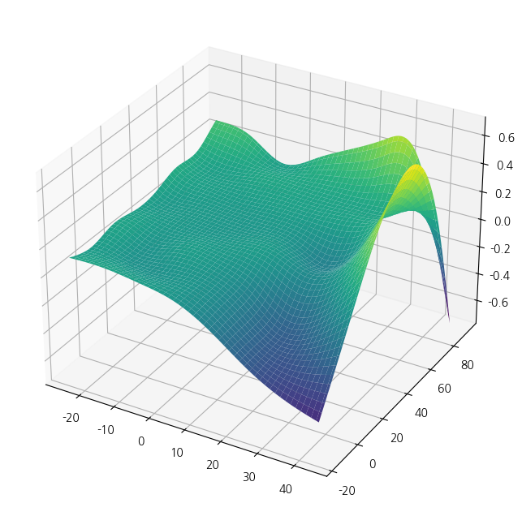
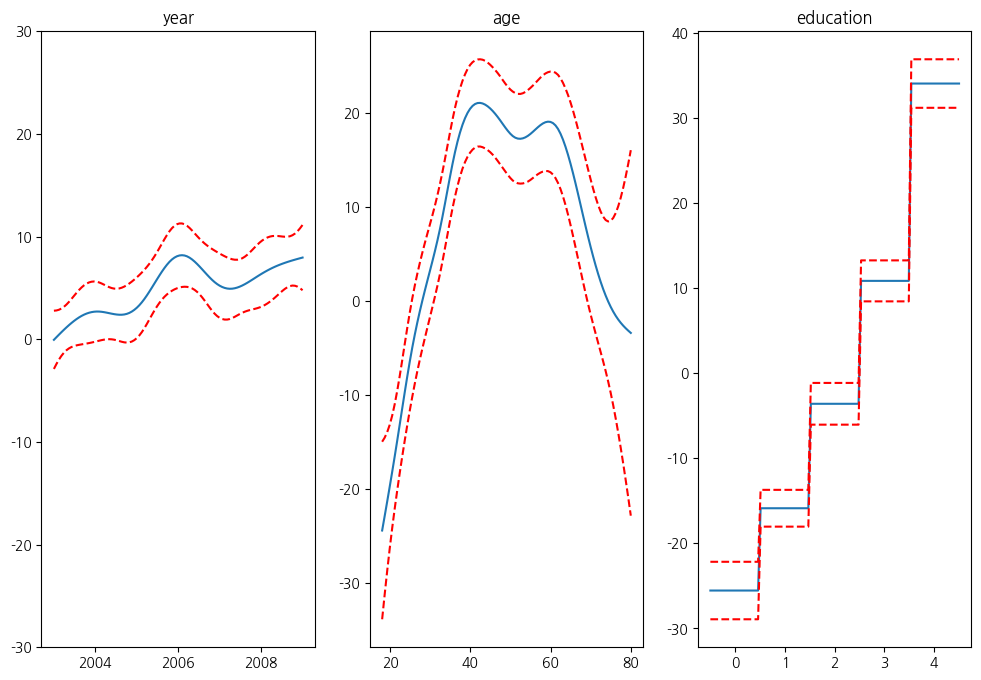

from pygam import PoissonGAM, s, te
from pygam.datasets import chicago
import matplotlib.pyplot as plt
from mpl_toolkits import mplot3d1. imports
2. data
X, y = chicago(return_X_y=True)
gam = PoissonGAM(s(0, n_splines=200) + te(3, 1) + s(2)).fit(X, y)
print(X)[[-2.55650000e+03 3.15000000e+01 -7.43354430e+00 -1.95923379e+01]
[-2.55450000e+03 3.30000000e+01 -8.26530612e-01 -2.02173379e+01]
[-2.55350000e+03 2.90000000e+01 5.56645570e+00 -1.96756712e+01]
...
[ 2.55450000e+03 2.10000000e+01 -3.12394366e+00 -6.03620096e+00]
[ 2.55550000e+03 2.70000000e+01 -2.61239437e+01 -5.98700964e-01]
[ 2.55650000e+03 1.60000000e+01 -2.51239437e+01 -4.89036763e+00]]plt.ion()
plt.rcParams['figure.figsize'] = (12, 8)
XX = gam.generate_X_grid(term=1, meshgrid=True)
Z = gam.partial_dependence(term=1, X=XX, meshgrid=True)
ax = plt.axes(projection='3d')
ax.plot_surface(XX[0], XX[1], Z, cmap='viridis')
from pygam import LinearGAM, s
from pygam.datasets import toy_interaction
X, y = toy_interaction(return_X_y=True)
gam = LinearGAM(s(0, by=1)).fit(X, y)
gam.summary()LinearGAM
=============================================== ==========================================================
Distribution: NormalDist Effective DoF: 20.8507
Link Function: IdentityLink Log Likelihood: -2306456.1139
Number of Samples: 50000 AIC: 4612955.9292
AICc: 4612955.9492
GCV: 0.01
Scale: 0.01
Pseudo R-Squared: 0.9976
==========================================================================================================
Feature Function Lambda Rank EDoF P > x Sig. Code
================================= ==================== ============ ============ ============ ============
s(0) [0.6] 20 19.9 1.11e-16 ***
intercept 1 1.0 4.84e-02 *
==========================================================================================================
Significance codes: 0 '***' 0.001 '**' 0.01 '*' 0.05 '.' 0.1 ' ' 1
WARNING: Fitting splines and a linear function to a feature introduces a model identifiability problem
which can cause p-values to appear significant when they are not.
WARNING: p-values calculated in this manner behave correctly for un-penalized models or models with
known smoothing parameters, but when smoothing parameters have been estimated, the p-values
are typically lower than they should be, meaning that the tests reject the null too readily./tmp/ipykernel_164760/1955319438.py:6: UserWarning: KNOWN BUG: p-values computed in this summary are likely much smaller than they should be.
Please do not make inferences based on these values!
Collaborate on a solution, and stay up to date at:
github.com/dswah/pyGAM/issues/163
gam.summary()from pygam import LinearGAM, s, f
from pygam.datasets import wage
X, y = wage(return_X_y=True)
## model
gam = LinearGAM(s(0) + s(1) + f(2))
gam.gridsearch(X, y)
## plotting
plt.figure();
fig, axs = plt.subplots(1,3);
titles = ['year', 'age', 'education']
for i, ax in enumerate(axs):
XX = gam.generate_X_grid(term=i)
ax.plot(XX[:, i], gam.partial_dependence(term=i, X=XX))
ax.plot(XX[:, i], gam.partial_dependence(term=i, X=XX, width=.95)[1], c='r', ls='--')
if i == 0:
ax.set_ylim(-30,30)
ax.set_title(titles[i]);
prd = gam.predict(X)
print(prd)100% (11 of 11) |########################| Elapsed Time: 0:00:00 Time: 0:00:000:00[ 53.1205114 99.77681713 111.72416178 ... 70.60725438 92.57124761
104.77865877]<Figure size 1200x800 with 0 Axes>
import numpy as np
import statsmodels.api as sm
from statsmodels.gam.api import GLMGam, BSplines
from statsmodels.gam.tests.test_penalized import df_autos
x_spline = df_autos[['weight', 'hp']]
bs = BSplines(x_spline, df=[12, 12], degree=[3, 3])
alpha = np.array([21833888.8, 6460.38479])
gam_bs = GLMGam.from_formula('city_mpg ~ fuel + drive', data=df_autos,
smoother=bs, alpha=alpha)
res_bs = gam_bs.fit()
print(res_bs.summary())
aa = gam_bs.select_penweight()[0]
gam_bs = GLMGam.from_formula('city_mpg ~ fuel + drive', data=df_autos,
smoother=bs, alpha=aa)
res_bs = gam_bs.fit()
print(res_bs.summary()) Generalized Linear Model Regression Results
==============================================================================
Dep. Variable: city_mpg No. Observations: 203
Model: GLMGam Df Residuals: 188.93
Model Family: Gaussian Df Model: 13.07
Link Function: Identity Scale: 4.8440
Method: PIRLS Log-Likelihood: -440.89
Date: Tue, 20 May 2025 Deviance: 915.18
Time: 00:21:53 Pearson chi2: 915.
No. Iterations: 3 Pseudo R-squ. (CS): 0.9996
Covariance Type: nonrobust
================================================================================
coef std err z P>|z| [0.025 0.975]
--------------------------------------------------------------------------------
Intercept 51.9973 1.989 26.147 0.000 48.100 55.895
fuel[T.gas] -5.8509 0.725 -8.068 0.000 -7.272 -4.430
drive[T.fwd] 1.4220 0.816 1.742 0.081 -0.177 3.021
drive[T.rwd] 1.0827 0.840 1.290 0.197 -0.563 2.728
weight_s0 -3.5615 0.955 -3.728 0.000 -5.434 -1.689
weight_s1 -9.1011 1.743 -5.221 0.000 -12.518 -5.685
weight_s2 -13.0504 1.820 -7.172 0.000 -16.617 -9.484
weight_s3 -14.2879 1.846 -7.739 0.000 -17.907 -10.669
weight_s4 -15.2068 1.885 -8.069 0.000 -18.900 -11.513
weight_s5 -15.9885 1.955 -8.176 0.000 -19.821 -12.156
weight_s6 -16.6497 2.030 -8.203 0.000 -20.628 -12.671
weight_s7 -17.0029 2.037 -8.348 0.000 -20.995 -13.011
weight_s8 -19.3784 2.357 -8.222 0.000 -23.998 -14.759
weight_s9 -20.7959 2.445 -8.505 0.000 -25.588 -16.003
weight_s10 -20.8523 2.434 -8.568 0.000 -25.623 -16.082
hp_s0 -1.4402 0.556 -2.589 0.010 -2.531 -0.350
hp_s1 -3.1671 0.953 -3.323 0.001 -5.035 -1.299
hp_s2 -5.3441 1.185 -4.509 0.000 -7.667 -3.021
hp_s3 -6.4143 1.283 -5.000 0.000 -8.929 -3.900
hp_s4 -7.6873 1.335 -5.757 0.000 -10.305 -5.070
hp_s5 -8.9868 1.363 -6.592 0.000 -11.659 -6.315
hp_s6 -9.3044 1.404 -6.625 0.000 -12.057 -6.552
hp_s7 -10.8922 1.582 -6.885 0.000 -13.993 -7.791
hp_s8 -12.5287 2.319 -5.402 0.000 -17.075 -7.983
hp_s9 -14.5981 3.220 -4.534 0.000 -20.909 -8.287
hp_s10 -11.8905 2.549 -4.666 0.000 -16.886 -6.895
================================================================================
Generalized Linear Model Regression Results
==============================================================================
Dep. Variable: city_mpg No. Observations: 203
Model: GLMGam Df Residuals: 180.48
Model Family: Gaussian Df Model: 21.52
Link Function: Identity Scale: 4.0946
Method: PIRLS Log-Likelihood: -419.19
Date: Tue, 20 May 2025 Deviance: 738.98
Time: 00:21:58 Pearson chi2: 739.
No. Iterations: 3 Pseudo R-squ. (CS): 0.9999
Covariance Type: nonrobust
================================================================================
coef std err z P>|z| [0.025 0.975]
--------------------------------------------------------------------------------
Intercept 52.4614 2.268 23.131 0.000 48.016 56.907
fuel[T.gas] -6.6980 0.748 -8.955 0.000 -8.164 -5.232
drive[T.fwd] 1.3410 0.780 1.719 0.086 -0.188 2.870
drive[T.rwd] 1.0947 0.791 1.384 0.166 -0.456 2.645
weight_s0 -6.6859 2.378 -2.811 0.005 -11.347 -2.024
weight_s1 -17.8591 3.411 -5.235 0.000 -24.545 -11.173
weight_s2 -21.0695 3.038 -6.935 0.000 -27.024 -15.115
weight_s3 -22.5195 3.042 -7.404 0.000 -28.481 -16.558
weight_s4 -23.8743 3.095 -7.714 0.000 -29.940 -17.809
weight_s5 -25.4000 3.190 -7.961 0.000 -31.653 -19.147
weight_s6 -26.2096 3.247 -8.071 0.000 -32.574 -19.845
weight_s7 -25.6648 3.187 -8.053 0.000 -31.911 -19.419
weight_s8 -29.4997 3.669 -8.040 0.000 -36.692 -22.308
weight_s9 -31.0384 3.775 -8.223 0.000 -38.437 -23.640
weight_s10 -29.7902 3.467 -8.593 0.000 -36.585 -22.995
hp_s0 14.0467 5.372 2.615 0.009 3.519 24.575
hp_s1 3.7013 3.077 1.203 0.229 -2.330 9.733
hp_s2 3.5817 3.500 1.023 0.306 -3.279 10.442
hp_s3 0.1493 3.217 0.046 0.963 -6.157 6.455
hp_s4 5.1547 3.404 1.514 0.130 -1.518 11.827
hp_s5 -4.4357 3.208 -1.383 0.167 -10.722 1.851
hp_s6 2.5534 3.292 0.776 0.438 -3.899 9.005
hp_s7 -4.0536 3.350 -1.210 0.226 -10.620 2.513
hp_s8 2.5193 4.267 0.590 0.555 -5.844 10.882
hp_s9 -11.4462 5.134 -2.230 0.026 -21.509 -1.384
hp_s10 -0.6669 3.913 -0.170 0.865 -8.336 7.003
================================================================================